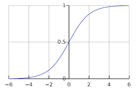

逻辑回归简介
逻辑回归是一个分类算法，它可以处理二元分类以及多元分类。线性回归的模型是求出输出特征向量Y和输入样本矩阵X之间的线性关系系数$\theta$，满足$Y=X\theta$。此时我们的Y是连续的，所以是回归模型。如果Y是离散的话，此时回归问题就变成了分类问题。我们对于这个Y再做一次函数转换，变为$g(Y)$。如果我们令$g(Y)$的值在某个实数区间的时候是类别A，在另一个实数区间的时候是类别B，以此类推，就得到了一个分类模型。如果结果的类别只有两种，那么就是一个二元分类模型了。逻辑回归的出发点就是从这来的。下面开始引入二元逻辑回归。
二元逻辑回归算法
二元逻辑回归的模型
上一节我们提到对线性回归的结果做一个在函数g上的转换，可以变化为逻辑回归。这个函数g在逻辑回归中我们一般取为sigmoid函数，形式如下：
函数图像如下：

从图中可以看出，sigmoid函数有如下重要性质：
- 当z趋于正无穷时，g(z)趋于1
- 当z趋于负无穷时，g(z)趋于0
可以看到，这两条性质使得sigmoid函数十分适合分类算法。另外，它的导数性质也很好，通过对它求导，可以得到下式：
令g(z)中的z为：$z=x\theta$，这样就得到了二元逻辑回归模型的一般形式：
其中$x$为样本输入，$h\theta(x)$为模型输出，可以理解为某一分类的概率大小。而$\theta$为分类模型的要求出的模型参数。对于模型输出$h\theta(x)$，我们让它和我们的二元样本输出$y$（假设为0和1）有如下对应关系：
- 如果$h_θ(x)>0.5$ ，即$xθ>0$, 则$y$为1。
- 如果$hθ(x)<0.5$，即$xθ<0$, 则$y$为0。
- $y=0.5$是临界情况，此时$xθ=0$，从逻辑回归模型本身无法确定分类。
- $h_θ(x)$的值越小，而分类为0的概率越高，反之，值越大的话分类为1的的概率越高。如果靠近临界点，则分类准确率会下降。
此处也可以将模型写成矩阵模式：
其中$h_θ(X)$为模型输出，为$m\times 1$的维度。$X$为样本特征矩阵，为$m\times n$的维度。θ为分类的模型系数，为$n\times 1$的向量。
损失函数
回顾下线性回归的损失函数，由于线性回归是连续的，所以可以使用模型误差的的平方和(MSE)来定义损失函数。但是逻辑回归不是连续的，自然线性回归损失函数定义的经验就用不上了。这里可以用最大似然法来推导出损失函数。
首先根据二元逻辑回归的定义，可以知道样本输出只有0或1两种，表达式如下：
将两式合并可得：
其中，y的值只为0或1
这样就得到了y的概率分布函数，接下来可以用似然函数最大化来求解模型系数$\theta$，这里使用对数似然函数最大化，并取反作为损失函数。似然函数表达式为：
其中m为样本个数
样本$X_1, X_2,\dotsb,X_n$取到的观察值$x_1, x_2,\dotsb,x_n$的概率$L(\theta)$，称为似然函数。
对似然函数对数化取反的表达式，即损失函数为：
一般实践中会多除以m
损失函数的矩阵表达法：
其中E为全1向量
二元逻辑回归算法优化
损失函数优化方法
对于二元逻辑回归的损失函数极小化，有比较多的方法，最常见的有梯度下降法，坐标轴下降法，等牛顿法等。这里推导出梯度下降法中$θ$每次迭代的公式。
代数法
由于代数法最终推导出的公式与线性回归中相等，可直接查看this/#%E4%BB%A3%E6%95%B0%E7%AE%97%E6%B3%95)
矩阵法
对于$J(\theta) = -Y^T logh{\theta}(X) - (E-Y)^T log(E-h{\theta}(X))$，我们用J(θ)对θ向量求导可得：
这里使用到了矩阵和向量的链式求导法则，以及以下三个求导公式的矩阵形式：
- $\frac{\partial}{\partial x}logx = 1/x$
- $\frac{\partial}{\partial z}g(z) = g(z)(1-g(z))$ (g(z)为sigmoid函数)
- $\frac{\partial x\theta}{\partial \theta} = x$
对上面的求导公式化简可得：
从而在梯度下降法中每一步向量θ的迭代公式如下：
$\alpha$为梯度下降法的步长
实践中，大部分机器学习都包含了各种优化方法的实现
正则化
逻辑回归也会面临过拟合问题，所以我们也要考虑正则化。常见的有L1正则化和L2正则化。
L1正则化
二元逻辑回归的L1正则化损失函数表达式如下：
其中$||θ||_1$为$θ$的L1范数。
逻辑回归的L1正则化损失函数的优化方法常用的有坐标轴下降法和最小角回归法。
L2正则化
二元逻辑回归的L2正则化损失函数表达式如下：
其中$||θ||_2$为$θ$的L2范数。
逻辑回归的L2正则化损失函数的优化方法和普通的逻辑回归类似。
二元逻辑回归的推广：多元逻辑回归
前面几节的逻辑回归的模型和损失函数都局限于二元逻辑回归，实际上二元逻辑回归的模型和损失函数很容易推广到多元逻辑回归。比如总是认为某种类型为正值，其余为0值，这种方法为最常用的one-vs-rest，简称OvR.
另一种多元逻辑回归的方法是Many-vs-Many(MvM)，它会选择一部分类别的样本和另一部分类别的样本来做逻辑回归二分类。最常用的是One-Vs-One（OvO）。OvO是MvM的特例。每次我们选择两类样本来做二元逻辑回归。
softmax回归
这里介绍多元逻辑回归的softmax回归的一种特例推导，首先回顾下二元逻辑回归：
其中，y只能取到0或1，则有：
推广到多元逻辑回归，需要对模型做出扩展。这里假设处理的是K元分类模型，即样本输出的取值为1，2，…，k。跟据二元逻辑回归，可以得到以下式子：
以上共k-1个方程
又因为已知所有概率之和为一：
从而得到总共K个方程，里面有K个逻辑回归的概率分布。解出这个方程组，就可以得到K元逻辑回归的概率分布：
多元逻辑回归的损失函数推导以及优化方法和二元逻辑回归类似
求出的损失函数叫做交叉熵损失函数
If you like this blog or find it useful for you, you are welcome to comment on it. You are also welcome to share this blog, so that more people can participate in it. If the images used in the blog infringe your copyright, please contact the author to delete them. Thank you !